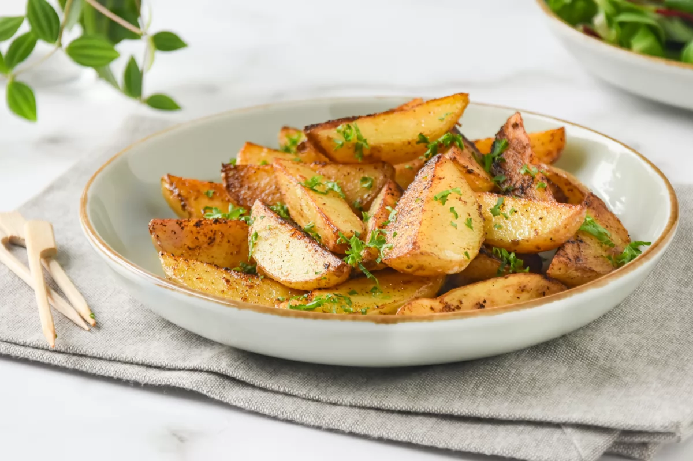
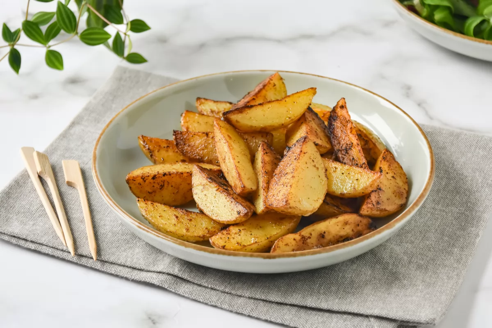
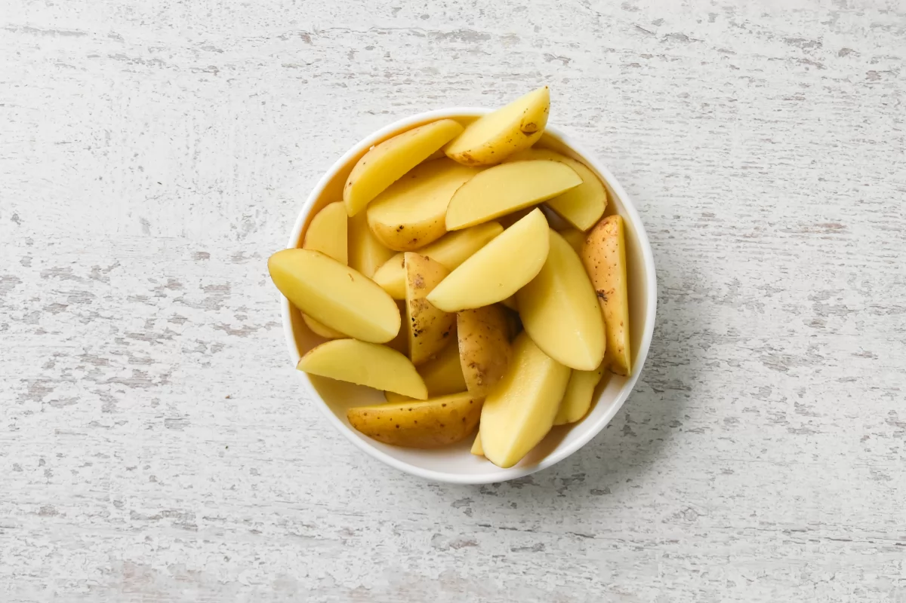
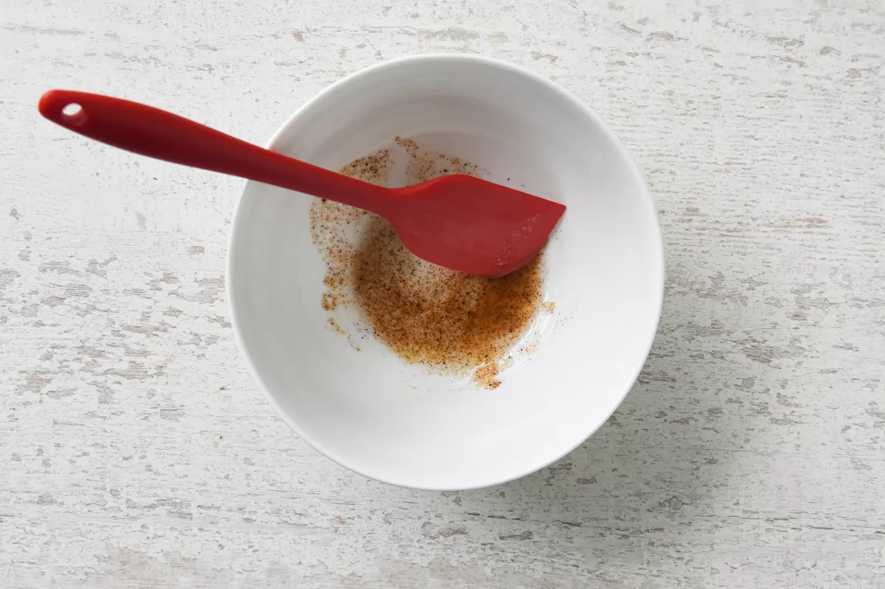
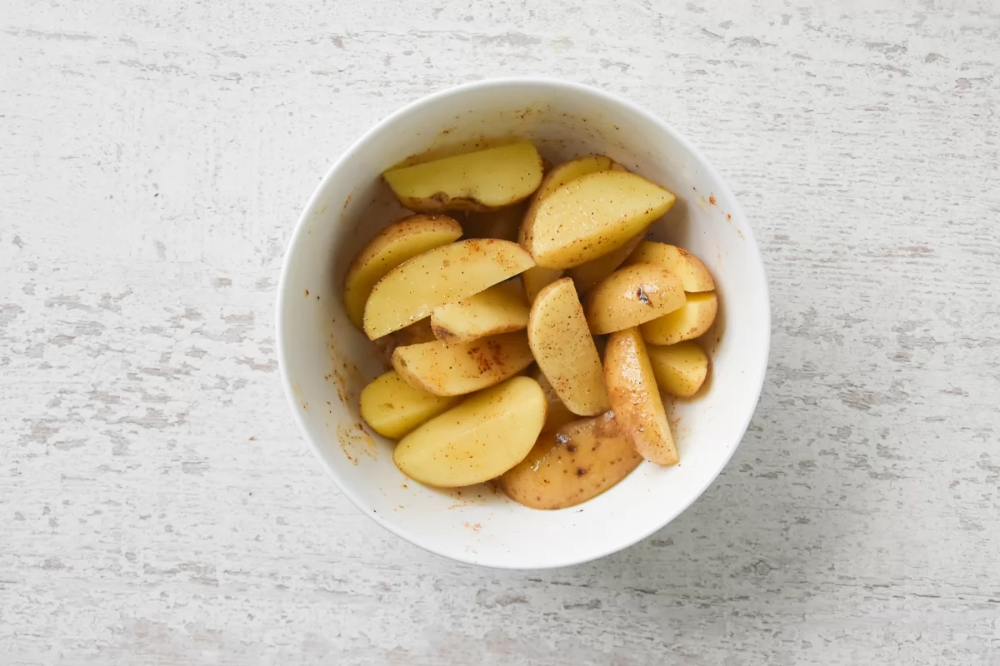
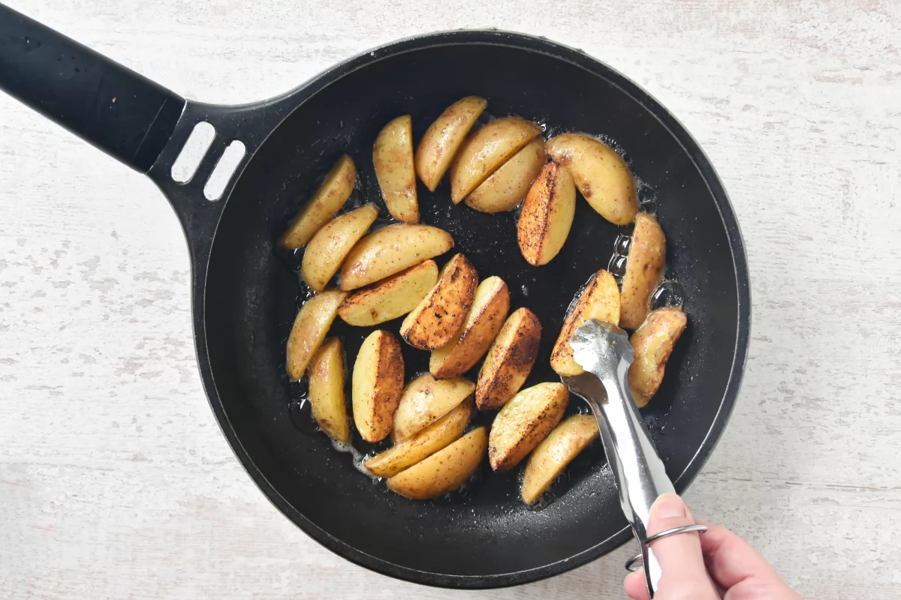
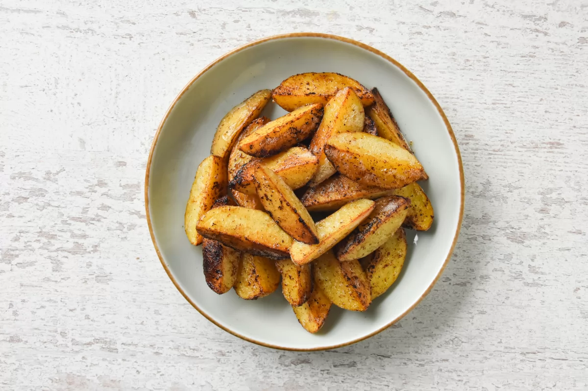

Las patatas a la plancha es el acompañamiento o guarnición más fácil que podemos hacer cuando tenemos poco tiempo. El aderezo que utilicemos las convertirá en un delicioso bocado. En esta receta, os enseñamos cómo las preparamos nosotros.
Las patatas que utilizaremos para esta receta son de las pequeñas y con piel fina ya que no las vamos a pelar. Aunque si a vosotros no os gusta la piel, podéis retirarla antes de empezar la receta.
A nosotros nos gusta cortarlas en gajos porque quedan más doradas y crujientes, pero se pueden cortar también en rodajas.
El aderezo con el que las prepararemos de pimentón, ajo y perejil es suave y el aceite solo lo utilizaremos para que el condimento quede adherido a las patatas. Podéis añadir una pizca de chile en polvo si os gustan los sabores más pronunciados.
Para dorar las patatas hemos utilizado mantequilla, lo justo para que las patatas no se peguen a la sartén, aunque podéis utilizar aceite de oliva en su lugar.

Lavamos y cortamos 200 g de patatas a gajos.
Mezclamos en un cuenco amplio 1 cucharada de aceite de oliva, ½ cucharadita de ajo en polvo, ¼ cucharadita de pimentón ahumado y salpimentamos.
Introducimos las patatas en el cuenco y removemos para que queden bien impregnadas con el aderezo.
Calentamos 10 g de mantequilla y doramos las patatas, girándolas, durante 6-8 minutos a fuego medio hasta que estén hechas. Podemos comprobar si están listas pinchándolas con la punta de un cuchillo; si no ofrece resistencia es que ya están en su punto.
Retiramos las patatas de la sartén y las servimos. Podemos cortar 1 cucharada de hojas de perejil y repartirlas por encima de las patatas.
